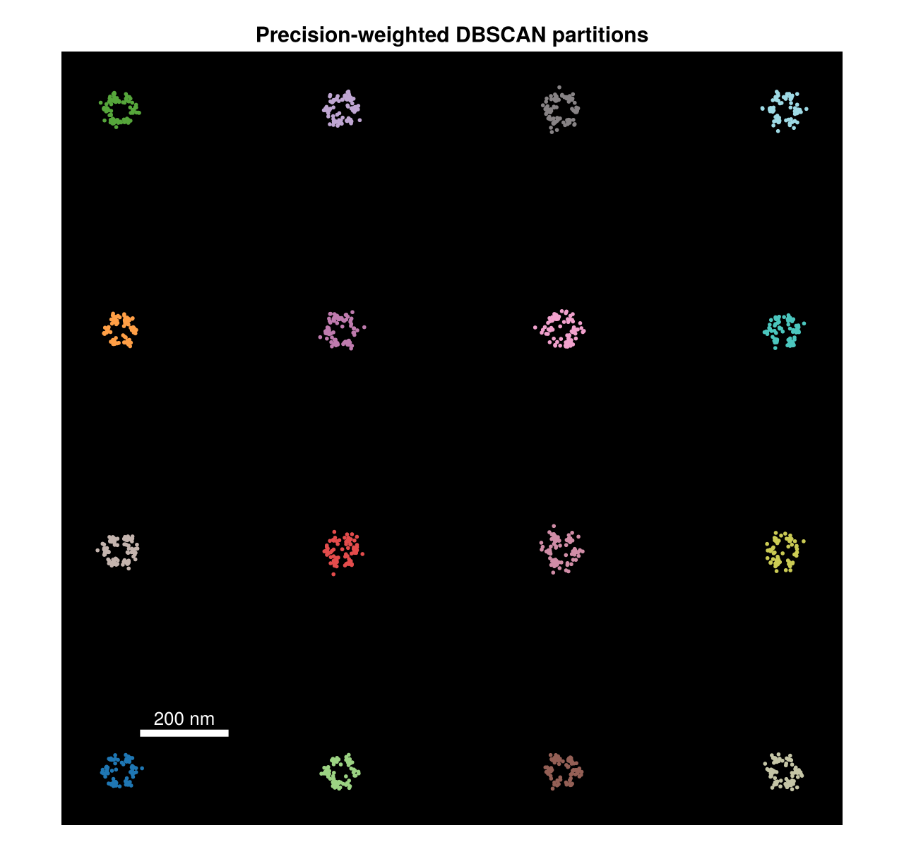
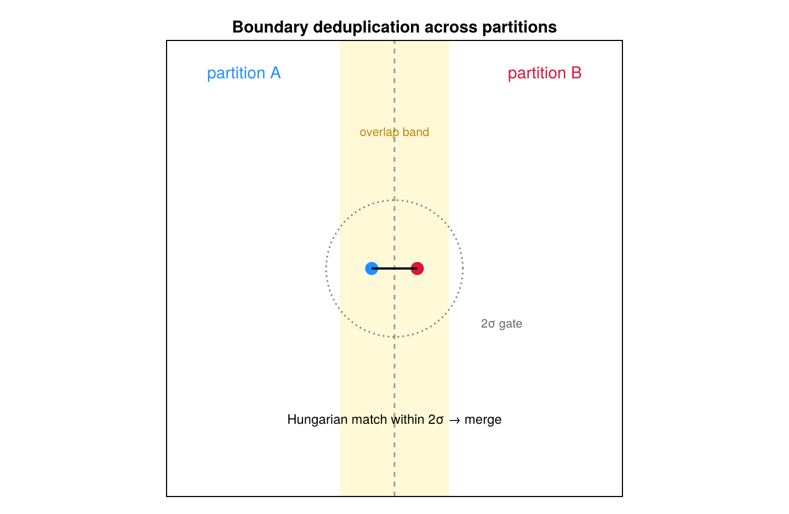

Large-Dataset Partitioning
run_bagol splits large data into independent partitions before sampling, runs them in parallel, and stitches the boundaries back together (partition.jl, partitioned.jl). This is what lets BaGoL scale to full fields of view.
Precision-weighted DBSCAN
partition_locs joins two localizations into the same partition when their separation is small relative to their uncertainties:
\[\frac{\lVert \mathbf{p}_i - \mathbf{p}_j \rVert}{\sigma_i + \sigma_j} < \texttt{partition\_sigma}, \qquad \sigma_i = \sqrt{\sigma_{x,i}\,\sigma_{y,i}},\]
so partition_sigma is a threshold in summed-σ units (default 3). A KD-tree over a loose Euclidean bound supplies candidates, which are then filtered by the exact test above. With the default min_size = 0, every point is a core point, so this is single-linkage clustering at the σ-normalized threshold.
Despite "precision-weighted," the criterion divides by the σ-sum: larger σ (lower precision) makes two localizations more likely to share a partition. It is a σ-normalized distance, chosen so that uncertain localizations are grouped conservatively.

A field of localizations colored by partition assignment. Each color is an independent BaGoL run; the partitioning follows the data's natural gaps.
METIS splitting of oversized partitions
Any partition above max_partition_size (default 1000) is divided by METIS $k$-way partitioning on a precision-weighted $k$-nearest-neighbor affinity graph, keeping every MCMC run bounded in size without cutting through dense regions.
Boundary deduplication
Splitting can place one true emitter on a partition seam, producing a duplicate on each side. run_bagol repairs this: emitters near a shared boundary are matched across each partition pair by Hungarian assignment on Euclidean distance, and a matched pair is merged only when it passes a $2\sigma$ gate
\[\lVert \mathbf{p}_i - \mathbf{p}_j \rVert < 2\sqrt{\sigma_{x,i}^2 + \sigma_{y,i}^2 + \sigma_{x,j}^2 + \sigma_{y,j}^2}.\]
Merged positions use determinant-precision weights and the photons are summed.

Two adjacent partitions sharing an overlap band; a true emitter detected in both is matched by Hungarian assignment within a $2\sigma$ gate and merged into one.
Synchronization
Partitions run under Threads.@threads, but the hierarchical updates are global: every sync_interval iterations the threads join and $\mu$ / shape are updated from the pooled counts across all partitions, so the whole field shares one learned count distribution. Run with julia --threads=auto to use the parallelism.